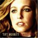

February 10, 2006
( a special message from jeff)
I drive to the dump. I listen to the radio. I drive to the next dumpster.
I listen to the radio. I drive back to base. I listen to the radio. I listen to the radio
a lot picking up recycling in Seattle. Furthermore, I listen to KEXP, 90.3 FM in Seattle,
a local public radio station with a growing international presence thanks to their
website.
It's a fine radio station, playing mostly indie rock with a smattering of other
genres. There is one exception. I hate their morning DJ, John "John in the Morning" Richard
with a vengeance that is bordering on obsession at this point. Why do I hate him?
1. He hypes (and repeatedly plays) bands I hate (Clap Your Hands Say Yeah, The Black Angels, etc)
2. He thinks he's the shit. He's not.
4. Instead of going by his real name—he calls himself John in the Morning.
3. He books shows at Chop Suey and calls them "John in the Morning at Night."
At these said shows, he books the aforementioned bands that I hate.
5. He, like me, is a whiny Midwestern white dude. The big difference: I don't have a fucking
radio show. Instead, I perform hit and runs in my recycling truck.
6. He made $120,000 as a dj of a public radio station last year! See the article in the
Seattle Weekly.
7. He has greasy long hair
In conclusion, I hate John Richards. While I don't want to intentionally kill anyone,
if I was forced by Jesus to hit someone with my recycling truck, it would be him.
written by the one and only jefferey richardson
February 5, 2006
So, the clap your hands and say yeah show in Minneapolis was sold out in about a day.
Some of Nancy's friends were complaining that the tickets went so fast. I told them that is what happens
when a band is hyped so badly—and then play an insanely small venue. I guess they will just have to
wait 'til next year when either (a) they play at First-Avenue to a much larger crowd or (b) nobody cares
about them anymore, making tickets much easier to get. I am going with option (b).
January was a slow month for getting records. With Christmas being so recently over, and so many family
and friends having birthdays, I lacked the proper funds to purcahse myself records. I had to make due
with old standby's that I had not listened too in a while, as well as more recent purchases that never
really sunk in (like the Shout out Louds, L'altra, and an older Westerberg album).
I have to tell you that iTunes and my iPod do occasionally get in the way of complete album listening,
Perhaps I will have to put a "singles i have listened to" section up as well. It is nice to just hit
play and be surprised. For instance, I downloaded the SXSW mp3's from the 2005 South by Southwest event
and to this day still hear new songs from my computer speakers while on shuffle. That was nearly a year
ago, and I have yet to hear all the 2000 songs. Crazy. I do highly recommend downloading the SXSW tracks,
in fact when the festival kicks off again this year I will put a link here so you all can find them. There
is some really great stuff in the 2gigs of songs—there is a lot of crap too—but the good
far outweighs the bad. I believe there is one track from nearly every band that plays the event. Amazing.
On to the albums...
First on the list, Heartbreaker by Ryan Adams. A friend
of mine just bought '29' and wanted to hear some of the other stuff. I recommended he start at
the beginning of Adam's solo stuff, and lent him Heartbreaker. Upon the album being
returned to me, I began to listen to it again as well. Also, I saw Ryan Adams play on Letterman several
weeks ago, and he played Come Pick Me Up off of Heartbreaker instead of one
of his newer songs. His initial offering is still a very enjoyable record. Adam's style has made a sort of
zig-zag path from this initial recording to what he is doing now.

An attempt to watch Ryan Adams perform on Austin City Limits led me (and nancy) to another artist,
Tift Merrit. Nancy the next available day went out and purchased her last record
Tambourine. Tift is on Lost Highway Records along with Adams, and shares the same
country-blues / country-rock stylings. She is fairly comparable to a younger bonnie raitt, or perhaps a
more country influenced norah jones. Fans of Gillian Welch and Kathleen Edwards would be wise to pick up
her release. I don't hear a particularly large amount of tambourine, so perhaps I am missing where the
title is coming from. However, George Drakoulias (the other part of the American Records team-i.e. not
Rick Rubin) produced the record, and it has the same sort of rock flair that made bands like the
Jayhawks and Tom Petty's early recordings so well liked.
The Shout out louds are another beauty of a group hailing from sweden.
Damn i love those nordics. kings of convenience, check,
the concretes, check, the ravonettes, check...
the list could go on. Checklists aside, the shout out louds write simple,
compelling, indie pop tracks that hook you in. Most notably agreeable is the first track, The Comeback.
The simple one verse, one chorus and repeat format makes for a neat little number that has a good
beat and steady, even strum guitars. It is IKEA simplicity applied in 3 minutes to music. When
initially released, this track was a staple of
The Current's
day to day track lists. Another fave of mine from the disc was track 4, A TRACK AND A TRAIN which bizarrely
sounds just like a new VICIOUS VICIOUS song called Castaways. Unfortunately for the artwork this CD does
brandish the FBI anti-piracy logo, but the designer did handle it the best of all the discs I have seen
thus far.
Next on the the list, CRYSTAL SKULLS. Last time I told you all to go and check out their record, and so
I took the advice myself and started listening to them again. I really got hooked back in and I am
really excited to hear their new record which should be released farely soon I should guess. They have
a good style that I have not really heard repeated by any other groups. I saw them on tour with Suicide
Squeeze labelmates HEADPHONES. I really went to see my pals DUPLOMACY open up, but it was worth my while
to stay for the rest. Headphones I had already heard at the time, but the Crystal Skulls sort of blew me
away. I was unprepared for what came off the stage—given the sort of droopy appearance of most of the band.
There's is a good combination of smart lyrics, good arrangements, interesting song structures. In short,
a winning combination that I give an enthusiastic thumbs up.
DIFFERENT DAYS by L'ALTRA was a recent purchase. The disc was released in early 2005 and I heard two
or three songs off the album on the current before i decided to go out and buy it. The band is made up
a former husband and wife duo, whose apparently messy divorce did not stop them from being able to work
in the studio together. According to my sources they said to each other that the band was their job and
they could work together to still make music. Pretty cool. The record definitely carries a somber,
depressed feel to it, perhaps a relic of the divorce, perhaps just their style. I do not know, but I
did like the record. I have been told that I like to listen to depressing music, and so that may be a
reason that I've been enjoying this. The somberness level is up their with the likes of ARAB STRAP,
LOW, or maybe RED HOUSE PAINTERS less rocking moments. The disc is slow in tempo, and even in its
mood, occasional electric drums punching through slowly strummed guitars, soft strings and carefully
tapped piano keys.
Um, could somebody tell me why I have not heard this Unicorns record (who will cut our hair...) before?
It is awesome! The right amount of Lo-Fi combined with smart arranging and orchestration. A lot of great
elements coming together, exuberance, up-tempo / down tempo change ups, electronic drum beats leading
into real drums, crazy synths, crappy guitar parts, sloppy solos, the breathy, youthful vocals. I love
it. Everyone should go out and buy this right now. I tried to check out their website, but apparently
they are a band no more. Let their lyrics speak to the wonder and memory of the band, "...we are unicorns,
we're more than horses..." Wow.
KRISTIAN
©2006 kristian bjornard * itempimoderni